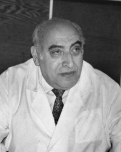
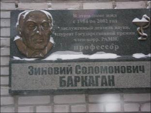

|
Знаменитые
романовские
Раббанит Хана
Шнеерсон родилась 28 Тевета 5640 (12 января 1880) года в колонии Романовка Херсонской губернии.
Ее родителями были рабби Меир-Шломо Яновский, земледелец колонии
Романовка и ребецен Рахель дочь
рабби Ицхака Пушнича, раввина колонии Добренка.
Тринадцатого Сивана 5660
(10 июня 1900) года она вышла замуж за рабби Лейви-Ицхока Шнеерсона. В
5669 (1908) году рабби Лейви-Ицхок занял пост раввина города
Екатеринослава (ныне Днепропетровска). На протяжении тридцати лет
исполнения им должности раввина Екатеринослава ребецн стояла с ним рядом
в его святой работе. В дополнение к тому, что ребецен была сведуща в
книгах и была образованной женщиной, она хорошо владела русским языком,
понимала людей и умела с ними общаться. Этим она внесла немалый вклад в
успех своего мужа.
В 5699 (1938) году рабби
Лейви-Ицхок был арестован за его активные действия по укреплению Иудаизма
в советской России. Вскоре он был осужден на ссылку в город Чили —
отдаленный город в Казахстане. Сразу после того, как ребецен стало
известно о местонахождении ее мужа, она присоединилась к нему, невзирая
на трудности и опасность, связанные с этим. Прибыв в Чили, она сумела
облегчить бесчисленные беды и мучения, выпавшие на долю мужа.
В нечеловеческих условиях
ссылки ребецин Хана сама, своими руками изготовляла самодельные чернила,
доставала бумагу для того, чтобы дать ему возможность писать удивительные
открытия в Торе, которые увидели свет только спустя около тридцати лет.
В 5707 (1946) году настал
конец ее мучениям и скитаниям. Реббецен Хана отправилась из России в
Париж, где ее встречал первый сын с которым ребецен не виделась около
двадцати лет. Из Парижа оба направились в Нью-Йорк, где для ребецен
начался новый, счастливый период жизни.
В Бруклине ребецен прожила
семнадцать последних лет своей жизни. Она ушла из мира в святую Субботу 6
Тишрея 5725 (1964) года и была похоронена в Нью-Йорке.
В память о
раббанит во всем мире были основаны еврейские образовательные учреждения,
получившие название “Бейс Хана”.
Лавут Абрам-Давид (1816 – 1890 гг.) –
раввин Николаевской синагоги, известный богослов, духовный лидер
николаевской религиозной общины во ІІ половине ХІХ в.
Родился в одной из белорусских губерний, получил
традиционное еврейское образование (окончил начальную школу – хедер и
высшую религиозную школу – ешиву). Когда в 1838 г. началась очередная
волна переселения евреев в Новороссию для расселения в земледельческих
колониях, он был в числе переселенцев и вскоре получил статус земледельца
еврейской колонии Романовка, основанной в 1841 г. О том, что он был среди
ее первых поселенцев-основателей свидетельствует «Приговор» 15 апреля
1843 г., подписанный всеми жителями колонии. Десятым в списке земледельцев колонии стоит Абрам
Лавут. То, что имя А. Лавута указано среди хозяев-земледельцев означало,
что к этому времени он был достаточно зрелым человеком (ему уже
исполнилось 27 лет), имел семью и хозяйство.
5 ноября 1845 г. Херсонским губернским правлением
Абрам Лавут утвержден на должность раввина колонии Романовка и прослужил
в этой должности почти 10 лет (через каждые 3 года в еврейских общинах
происходили выборы раввина). Принято считать, что он был посланником
лидера религиозного течения Хабад-Любавич третьего цадика (Ребе) Хабада
Цемах Цедека, направленным в Херсонскую губернию, чтобы возглавить
еврейскую общину одной из новых колоний.
А. Лавут стал первым раввином в истории колонии
Романовка, современники отмечали, что ребе Лавут заслужил большое
уважение за острый ум, глубокий интеллект, доскональное знание Талмуда и
организаторские способности. Под его руководством в колонии создана
хасидская ешива (высшая школа изучения еврейского религиозного права и
идей хасидизма), действовавшая до 1880 г. Ешива действовала нелегально,
без официального разрешения властей, но популярность и авторитет ее были
столь высоки, что власти так и не решились ее закрыть.
Абрам Лавут был прадедом матери Седьмого
Любавичского Ребе Менахема Мендла Шнеерсона, – одного из самых известных
и влиятельных еврейских религиозных и общественных деятелей ХХ в.,
родившегося в г. Николаеве 18 апреля 1902 г. Его мать Хана Мееровна
Яновская (правнучка А. Лавута) родилась в колонии Романовка в 1880 году. Ее
отец – бывший колонист колонии Романовка Меер Шломо Яновский с 1908 г. в
течение трёх лет занимал должность учёного еврея (раввина) в молитвенном
доме Николаева и при еврейской бане (микве).
После издания указа императора Николая І от 20
ноября 1829 г., в Николаеве запрещалось проживание евреев, которые не
являлись военнослужащими, в 1837 г. их выслали из города, но для евреев,
которые служили в Черноморском флоте, а также нескольких семей евреев-
подрядчиков морского ведомства в Николаевской «старой» синагоге (на ул. Черниговской) более 20 лет осуществлял богослужения казенный раввин
морского ведомства Хаим-Фройзельман Разумный, в 1854 г. на его место
временно пригласили Абрама-Давида Лавута, в связи с ухудшением состояния
здоровья предшественника. Считается, что в г. Николаев его пригласила
семья Рафаловичей – самая влиятельная
в городе еврейская семья, занимавшаяся торговлей и подрядным
судостроением.
Очевидно, еще будучи раввином в колонии Романовке
А.-Д. Лавут начал свою деятельность на ниве богословия. Много лет он
посвятил исследованию сидура (молитвенника) Алтер Ребе (одного из
основателей учения Хабад, породившего новое течение в иудаизме),
тщательно выверив тексты молитв, галахических постановлений и обычаев,
введенных Алтер Ребе, рабби Лавут исправил многие ошибки, большинство из
которых появилось в ходе типографского набора текста. Он дополнил книгу,
включив в нее отрывки из Торы, которые читают в будние дни в синагоге,
«слихот» (молитвы, произносимые в дни постов и перед Рош а-Шана) и др. Наиболее
важное дополнение в этом сидуре – комментарий «Шаар а-колель», который
сам по себе является важным галахическим трудом. Тексты, снабженные
галахическими указаниями, он трижды под разными названиями издал в Вильне:
в 1873, 1884 и 1887 гг. В 1889 г., внеся новые исправления и уточнения,
он вновь выпустил этот сидур, который пользовался большой популярностью,
поэтому был перепечатан в 1890 и 1892 гг. В 1896 г. под одной обложкой с
трудом А. Лавута «Шаар а-колель» вышло новое издание сидура Алтер Ребе
под названием «Тора ор». Как видим, богословские комментарии А.Д. Лавута
продолжали издавать и после его смерти, их высоко ценил его праправнук
седьмой Любавичский Ребе Менахем Мендл Шнеерсон.
Во время проживания и служения в Николаеве
Абрам-Давид Лавут создал несколько книг: «Шаар а-колель», «Нетив а-хаим
аль дерех а-хаим», «Бейт Аарон»), посвященных различным областям Галахи и
богослужения. Важнейшим его трудом считается сборник законов семейного
права «Кав венаки», его название (в русском переводе – «Мал золотник, да
дорог») отражает два главных свойства книг Авраама-Давида: необыкновенный
лаконизм текста и его энциклопедическую полноту. Ребе Лавут вел широкую
переписку с хасидскими духовными лидерами и богословами, среди которых он
пользовался высокой репутацией, особо ценилась его широкая эрудиция в
вопросах богословия. Труды его сохраняют свое значение и в современном иудейском богословии.
Абрам-Давид Лавут быстро становится влиятельным и
авторитетным человеком среди евреев г. Николаева. В 1857 г. состоялись
первые выборы раввина, на которых он официально избран на должность
раввина Николаевской синагоги. В том же году А.-Д. Лавут удостоен
высочайшей (императорской) награды – золотой медали на станиславовской
ленте «За ревностную и усердную службу и добросовестное выполнение
раввинской обязанности». О высоком авторитете рабби среди николаевских
евреев, свидетельствует то, что в мае 1862 г. он вновь избран на ту же
должность из числа нескольких кандидатов. За его кандидатуру выборщики
проголосовали единогласно, что было большой редкостью при раввинских
выборах (в истории г. Николаева на протяжении ХІХ − начала ХХ вв.
это был единственный такой случай). Поскольку правительственные запреты на проживание
евреев в Николаеве еще не были сняты, сам избранный раввин должен был
получить от властей специальное разрешение на право проживания в городе. По
этому поводу вице-адмирал Г.И. Рогуля, исполнявший в это время
обязанности военного губернатора, сообщал в городскую Думу: «Согласно
желанию общества николаевских купцов-евреев, выраженному в… приговоре от
8 мая, я допускаю к исправлению должности раввина здешней синагоги
раввина Абрама Лавута, с тем, однако, чтобы он имел указанный вид на
свободное пребывание в Николаеве, о чем даю знать городской Думе для
дальнейшего распоряжения». Разрешение на проживание в городе он получил,
но до конца жизни в официальных документах числился «земледельцем колонии
Романовки» (встречающееся иногда утверждение о том, что ему был присвоен
статус почетного гражданина, документально не подтверждается).
В 60-х гг. ХІХ в. запреты на проживание евреев в
Николаеве постепенно снимались, численность и влияние еврейской общины
города возрастали. По российским законам общине следовало избрать
казенного раввина, который представлял бы интересы общины перед
городскими властями. В связи с тем, что у А.Д. Лавута не было
специального образования, полученного в казенном учебном заведении
(раввинском училище, университете), а такое условие было выдвинуто
властями, ребе утрачивал в дальнейшем право выставлять свою кандидатуру
на выборы на должность казенного раввина. В ноябре 1865 г. на должность
Николаевского казенного (городового) раввина избран Марк Когон, а Абрам
Лавут при этом избран его помощником. С этого времени в Николаеве
устанавливается традиция, согласно которой казенный раввин является
официальным лицом, представлявшим интересы общины перед городскими
властями, а его заместитель – фактическим, духовным раввином, который
становился высшим авторитетом для самой общины. Оба они переизбирались на
эти должности еще дважды, исполняя свои обязанности на протяжении 9 лет.
В 1874 г. А. Лавут вновь избран на должность
помощника казенного раввина при раввине М. Волкенштейне, а в 1881 г.
переизбран на эту же должность. Таким образом, в общей сложности А. Лавут
на протяжении 26 лет прослужил николаевской еврейской общине сначала
городовым раввином, а затем помощником казенного раввина, к этому следует
добавить еще почти десять лет службы раввином в колонии Романовка.
Абрам-Давид Лавут стал одной из наиболее выдающихся
личностей за всю историю николаевской иудейской общины. Он умер 23
февраля 1890 г. в возрасте 73 лет. Место погребения ребе неизвестно, можно предположить, что он был
похоронен на Николаевском еврейском кладбище, которое было ликвидировано
в 50-60-х гг. ХХ в., часть его территории ныне занимает Николаевский
зоопарк.
Следует признать, что встречающееся в литературе
утверждение, о том, что А. Д. Лавут, одновременно с исполнением
обязанностей Николаевского раввина, был также и казенным раввином
еврейских колоний в Новороссии, не более чем легенда, никак не
подтверждаемая документами, хотя и свидетельствующая о том, что как при
жизни, так после смерти, он стал легендарной личностью в восприятии
евреев, проживавших в причерноморских землях.
Литература и источники:
ГАНО. Ф. 222, оп. 1, д. 683, л.
190.
ГАНО. Ф. 230, оп. 1, д. 3784.
ГАНО. Ф. 484, оп. 1, д. 1498,
л. 6.
Пассик Я. Религия и еврейские земледельческие колонии / Я.
Пассик [Электронный ресурс] Режим доступа: http://www.evkol.nm.ru/religion.htm.
Штейман Б. История еврейской
земледельческой колонии Романовка 1841-1941 / Б. Штейман [Электронный
ресурс] Режим доступа: http://romanovka.nm.ru/istoria.html.
Щукин В.В., Павлюк А.Н. Земляки. Очерки истории еврейской общины города Николаева
(конец XVIII – начало ХХ вв.) / В.В. Щукин, А.Н. Павлюк – Николаев: Изд. Ирины Гудым, 2009. – С. 125-147.
Гриневич Е.В. Страницы истории
еврейских религиозных общин Николаевщины (нач. ХIХ– 50-е гг. ХХ вв.) / Е.В. Гриневич
[Электронный ресурс]. Режим доступа: http://www.judaica.kiev.ua/Conference/Conf2002/Conf05-02.htm.
В.В. Щукин
Источник: http://history.mk.ua/?p=692
БАРКАГАН
Зиновий Соломонович
Лауреат Государственной премии СССР, Заслуженный деятель науки РФ,
член-корреспондент РАМН, доктор медицинских наук, профессор, почетный
гражданин города Барнаула

Родился Зиновий
Соломонович Баркаган 25 апреля 1925 года. , в семье известного профессора-терапевта.
Отец — Баркаган Соломон Львович (1891—1967). Мать — Баркаган Минна
Александровна (1902—1966) Умер не дожив 4 месяцев до своего 82
летия в 2007 году.
После окончания Одесского
мединститута и защиты диссертации в 1950 году он работал в Таджикистане,
где столкнулся с гибелью людей от укусов змей и пауков-каракуртов. После
ряда экспериментов Зиновий Соломонович предложил свой метод лечения. Его
известность как серпентолога признана во всем мире, многие энциклопедии
выходят с фотографиями ядовитых змей, сделанными Баркаганом. Он единственный врач в России,
ставший членом Лондонского Королевского общества естествоиспытателей.
В 1956 г. Зиновий Баркаган
переехал в Барнаул, стал первым заведующим клинической кафедрой
открывшегося в городе медуниверситета, где проработал ровно 50 лет. . За
эти годы Зиновий Соломонович подготовил 32 доктора и 82 кандидата
медицинских наук Он автор более 560 печатных работ, выпустил более 50
книг. Основное направление его работ - исследование гемостаза, методов диагностики
его нарушений и лечения выявленных болезней.
Учение Баркагана о
ДВС-синдроме (тромбогеморрагическом) перевернуло многие традиционные
представления в медицине и позволило спасти миллионы жизней. Все, кто
раньше погибал от кровотечений (при родах, на операционном столе, при тяжелой инфекции и травмах), получили шанс
остаться здоровыми. Эффективность этого метода была продемонстрирована во
время землетрясения в Армении, где удалось сделать невозможное: не
ампутировать ни одной конечности у сотен пострадавших, снизить частоту
острой почечной недостаточности в десять раз и во столько же -
смертность.
Не менее значимой стала
борьба с невынашиваемостью беременности, начатая Баркаганом двадцать лет
назад. Благодаря его лечению на свет появилось 160 младенцев. Женщины
приезжали рожать в Барнаул из Америки, Швеции, других стран. Сейчас его
методика распространена повсеместно, и, вероятно, благодаря его идеям
родились тысячи детей.
Зиновий Соломонович был
лауреатом Государственных премий СССР, членом-корреспондентом РАМН,
награжден медалью им. П. Эрлиха, премией им. Кончаловского, Демидовской,
имел несколько почетных званий, в том числе почетного гражданина
Барнаула. Газета
"Московский доктор" написала о нем:
"Баркаган был обаятельным человеком,
прекрасным лектором и рассказчиком, на выступления которого приходили не
только врачи. Зал всегда ломился, слушали его, затаив дыхание. А сколько
различных историй он знал, сколько "тайных троп" познания было
ему ведомо. Увековечить память этого неординарного человека необходимо.
Нужно присвоить его имя улице в городе, алтайскому медицинскому вузу, а
также синдрому или методу лечения. Наиболее подходящим представляется
синдром Баркагана - ДВС, ведь именно здесь им сделаны наиболее весомые
открытия и достигнуты наиболее значимые успехи".
Письмо доктора
Владимира Гуровича (Израиль)
У себя в кардио-реанимационном отделении
медицинского центра Гиллель-Яффе в мае месяце я со своими коллегами провели
научную конференцию посвящённую памяти профессора З.С.Баркагана, его
научной деятельности и внедрению в практику израильского здравоохранения
научных достижений и рекомендации учённого с мировым именем и моего
учителя. В частности мы сейчас вместе с американской фирмой внедряем в
практику TEG Haemostasis Analyzer – Тромбоэлластографию в
кардиореанимации и интесивной терапии больных с инфарктом миокарда и
общего профиля.
Мой опыт применения тромбоэлластографии при
неотложных состояниях в бывшем СССР и опыт лечения тромбогеморрагического
синдрома по Баркагану оказался очень актуальным в нашей повседневной
работе и на новом технологическом уровне позволит качественно улучшить
нашу помощь больным.
20.06. 2008г.
Публикации Вестника Московского городского Научного
общества терапевтов –
Зиновия Соломоновича
БАРКАГАНА больше нет. Стр 10.
Зиновий Соломонович
Баркаган и гериатрия. Стр 11-12.
Новеллы Зиновия
Соломоновича БАРКАГАНА. Стр 1-3.
Памяти Зиновия
Соломоновича Баркагана стр. 5
Памяти Зиновия
Соломоновича Баркагана стр 8-9-10-11.
Учреждение премии за
выдающиеся научно-практические заслуги в отечественной гемостазилогии им.
З.С.Баркагана
|


{kind=link}